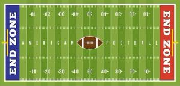

Reglas Basicas
Objetivo del fútbol americano
- - Es un juego de pelota jugado por dos equipos, 11 jugadores ofensivos juegan contra 11 defensivos.
- - El equipo atacante intenta llevar el balón, bien sea, mediante la carrera o mediante el pase hacia la zona de anotación y de esta manera anotar puntos.
- - La defensa tiene que tratar de impedir el avance del equipo rival hacia la anotación
- - Un partido dura 60 minutos, dividido en cuatro parciales de 15 minutos cada uno.
- - En una posesión, cada equipo dispone de 4 intentos para poder avanzar 10 yardas hacia adelante. Si al segundo intento se logró avanzar un total de 10 yardas desde el punto inicial, el equipo con la posesión vuelve a disponer de 4 intentos nuevos con 10 yardas por delante y seguir con el ovoide en su poder.
- - Si un equipo trata de lograr esas 10 yardas en el cuarto intento (por más que sólo le falten 2 yardas para conseguirlo) y fracasa, el rival iniciará la jugada siguiente en el punto donde se realizó esa jugada
Los Equipos
- - Cada equipo tiene 11 jugadores en cancha para cada jugada.
45 jugadores intercambiables en cada equipo.
- - Los jugadores se dividen en 3 categorías diferentes. Ataque, defensa y equipos especiales.
- - Los 11 jugadores en el campo de juego están determinados por el ataque y la defensa.
- - El quarterback es quien toma todas las decisiones ofensivas del equipo.
- - Los receptores, corren a la espera de que el quarterback les dé un pase y así ganar yardas.
- - Los corredores, quienes parten desde atrás esperando a que el quarterback les da la pelota de mano en mano y tratando de penetrar la defensa.
Campo de Juego

- Las dimensiones del campo son 120 x 53 - 1/3 yardas o 109,7 x 48,8 metros.
- Cada zona final tiene 10 yardas de profundidad, dejando un carril de 100 yardas de largo.
Balón
- La pelota del fútbol americano es un ovoide cubierta por una capa de cuero y su peso es de 397 - 425 gr.
Puntuaciones
- Touchdown: 6 puntos - la pelota cruza la línea hacia la zona final del oponente
- Punto extra: 1 punto - después de un touchdown, el atacante puede elegir patear la pelota entre las dos barras de gol en la zona final del ataque.
- Conversión: 2 puntos - en lugar de buscar "puntos extra", el equipo puede intentar que la pelota cruce la zona final del oponente una vez más.
- Safety / Auto-anotación: 2 puntos - Un jugador ofensivo es tacleado dentro de su propia zona de anotación mientras tiene posesión del balón o la ofensiva comete un castigo dentro de su propia zona de anotación.